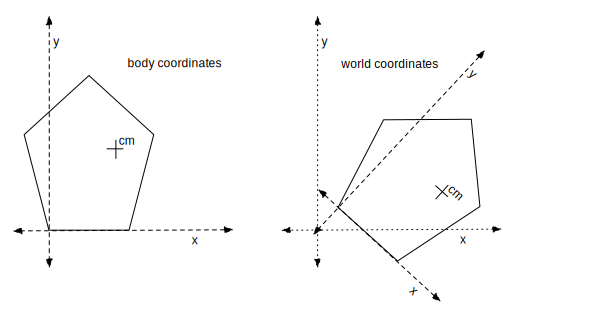
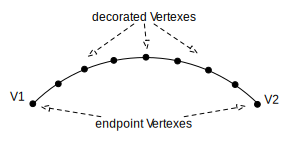

myPhysicsLab provides classes to build real-time
interactive animated physics simulations. This page gives an introduction to the
2D Rigid Body Physics Engine which is contained in the namespace
myphysicslab.lab.engine2D.
Contents of this page:
This overview describes how the physics engine software is organized and some of the issues involved. See the following references for the math and physics behind the physics engine. The rest of this overview assumes some familiarity with this information.
Relevant papers:
Baraff '94 David Baraff, Fast Contact Force Computation for Nonpenetrating Rigid Bodies. Computer Graphics Proceedings, Annual Conference Series, 1994 pages 23–34.
David Baraff, An Introduction to Physically Based Modeling: Rigid Body Simulation II—Nonpenetration Constraints. Siggraph '97 Course Notes.
Erik Neumann, Curved Edge Physics about modifications of the Baraff algorithm for curved edges.
Information about myPhysicsLab software in general:
A RigidBody in the 2D world of the engine2D physics engine has 3 degrees of freedom: it can translate in the X and Y directions, or rotate about its center of gravity. The position of a RigidBody is specified by the X and Y location of its center of gravity, and the angle of rotation about the center of gravity.
A RigidBody knows its current velocity and position. See the RigidBody methods
getPosition(), getAngle(), getVelocity(). A RigidBody can calculate its
translational and rotational energy and momentum. See translationalEnergy(),
rotationalEnergy(), momentum().
A RigidBody has a specified mass, and also an indication of how its mass is
distributed by specifying the moment about center of mass, see momentAboutCM().
The higher the moment, the more force it takes to rotate the body around its center of
mass.
Each RigidBody has its own local coordinate system called body coordinates, distinct from world coordinates (also called simulation coordinates). There are methods for converting between body and world coordinates, see MassObject.
In the diagram below we show a Polygon drawn in its body coordinates on the left. On the right is the Polygon moved so that its center of mass (cm) is at a certain world coordinates position, and the Polygon is rotated clockwise approximately 45 degrees. The body coordinate axes for the Polygon are superimposed as well – this shows that you can convert between the two coordinate systems.
In the diagram, cm is the center of mass; it can be anywhere within the body, see
RigidBody.setCenterOfMass().
When the Polygon is positioned in world coordinates, we specify the location of the
center of mass and the rotation around the center of mass. The rotation is with respect
to body coordinates, so a rotation of zero would look the same as the picture on the
left, but translated to wherever the center of mass should be. A rotation of pi/2
would rotate the body 90 degrees counter clockwise.
Polygon is the concrete class that implements the RigidBody interface. A Polygon has a particular fixed geometry specified by a list of Vertexes and Edges which are defined using body coordinates.
The two concrete implementations of Edge are StraightEdge and CircularEdge. Each Edge has knowledge about which side of the Edge is inside or outside of the Polygon. Therefore a CircularEdge can be concave or convex.
A Polygon can have a more complex shape, for example a doughnut shape. Edges cannot cross but there can be several paths. For the doughnut shape there are two paths – the outside and inside path of the doughnut.
Each Polygon has 6 variables in the VarsList to specify the position and velocity of its center of mass (in world coordinates)
These variables evolve over time based on what forces are applied to the bodies.
Scrim is a concrete class that implements the RigidBody interface. It is used as the fixed background which objects can be attached to with Joints or Ropes. It has infinite mass, infinite extent, never collides with anything, has no edges or Vertexes, and is an immutable singleton object. Scrim has no variables stored in the VarsList.
A physics engine calculates the forces needed in a physics simulation so that the objects behave according to laws of physics. There are many types of physics engines depending on what kind of objects are being simulated and what laws of physics they should obey. For example, fluid flow requires a very different physics engine than a rigid body simulation. Among rigid body physics engines some implement surface friction, some work on 3D objects, some handle deformable bodies, etc.
The physics engine described here works on 2D non-penetrating RigidBody objects,
without surface friction, and the bodies are not deformable. The physics engine is
implemented by RigidBodySim and its
sub-classes ImpulseSim and
ContactSim, along with several other
engine2D classes such as ComputeForces, CollisionAdvance, CircularEdge, StraightEdge
and others.
The simulation state is stored in an array of variables in a VarsList object. There are six variables for each Polygon as described earlier.
Like any other ODESim, RigidBodySim defines
differential equations in its evaluate() method. Those differential equations
implement the forces on the RigidBody objects and are integrated over time by a
DiffEqSolver resulting in the movement of the RigidBody objects. Forces appear as
changes to the accelerations returned by the evaluate() method.
ImpulseSim handles collisions between RigidBody objects; these collisions happen instantaneously, not thru the application of forces over time. When a collision is detected, a process occurs to “rewind” or “undo” the current simulation time step to the state before the collision, and then a smaller time step is taken to try to get close to the moment just before the collision occurs. Then ImpulseSim directly modifies the velocities of the RigidBody objects involved in the collision to what they should be after the collision.
ContactSim calculates the contact forces needed to prevent RigidBody
objects from interpenetrating. Only bodies that are very close together and not
colliding can have contact forces. The contact forces show up in the differential
equations like other forces do: as changes to accelerations of the RigidBody objects;
these forces are calculated in the ContactSim.evaluate() method. Just as with
other forces, the accelerations are integrated over time by a DiffEqSolver, resulting
in the motion of the RigidBodys.
There are three ways the physics engine can be used:
no collisions or contacts If you don’t want collisions or contacts, you should use RigidBodySim. This has the differential equations governing the motion of the rigid bodies, but objects will simply pass thru each other instead of colliding. You can still have whatever forces you want operating on the rigid bodies, such as gravity, damping, spring force, etc.
collisions only If you only want collisions but not contacts, use ImpulseSim directly without ContactSim. ImpulseSim will find collisions between RigidBody objects and handle the collisions by applying the appropriate impulse. The process of finding and handling collisions happens inbetween the time steps of the differential equation solver.
Note that without contact forces, the simulation can easily get stuck in cases where objects would settle against each other, such as a ball bouncing on the ground and losing some energy on each bounce.
both contacts and collisions
This is the usual way to use the physics engine, which you do by instantiating
ContactSim. During the differential equation calculation, in the evaluate()
method, contact points between objects are found and the necessary contact force is
calculated for each contact point.
Some physics engines allow objects to interpenetrate when they collide or are in close contact with each other. Typically such a physics engine will have the objects deforming to some extent and/or pushing against each other over time until they no longer overlap.
This physics engine is designed to prohibit objects penetrating each other, it works only on non-penetrating rigid bodies. Detecting a penetration (overlap) between objects means that a collision has occurred. We then back up in time to just before the collision – so the objects are not overlapping – and apply an impulse to reverse the collision.
The back up in time process is done with a binary search, taking successively smaller
steps until the objects are very close to each other but not overlapping. See
CollisionAdvance.advance()
where the “back up in time” process occurs.
If a collision cannot be resolved by the above process, then the simulation becomes stuck. “Resolving the collision” means that the bodies move apart after the impulse is applied, and we end the time step with no penetration. Collisions can only be detected as a transition from a non-penetrating state, so a persistent penetration means we can no longer detect collisions going forward.
For objects that are in contact – pressing against each other – we maintain a small gap between the objects, to avoid penetration. If the gap between objects is allowed to get close to zero, then inevitably a series of tiny penetrations will occur as the objects move about; these irrelevant tiny collisions greatly slow down the simulation because the “back up in time” mechanism happens; such a tiny collision is typically at very low speed and often cannot be corrected with an impulse and then the simulation will become stuck: the simulation is unable to resolve that penetration, and therefore unable to continue. This is discussed further in the section Seek to Half-Gap Distance.
There are additional “non-physical” policies that are used to preserve the gap between
objects that are in contact. See
ContactSim.getExtraAccel
for one such policy.
Some objects are allowed to overlap each other, as for example two objects that are
connected by a Joint to form a pendulum. This is done by explicitly stating that the
objects do not collide with each other, see
RigidBody.addNonCollide
and
Polygon.setNonCollideEdge.
See the section above about the math behind the physics engine for details, but here is a simplified overview of the process of solving for contact forces:
The set of contacts is found. the points where objects are close together and not moving relative to each other. This is represented as an array of RigidBodyCollisions.
The external forces (gravity, springs, etc.) are applied to all RigidBody
objects. This is done by RigidBodySim.evaluate() which calculates the
accelerations (absent contact forces) on all the variables representing the
RigidBody positions and velocities.
the A matrix is constructed where each row corresponds to a contact point,
and the number at the A[i,j] entry tells how much the acceleration at contact i
will change from a unit amount of force being applied at contact j.
the b vector is determined which corresponds to acceleration from the external
forces at each contact point. For example, a spring might be accelerating a body
into another body resulting in their contact point having negative (penetrative)
acceleration before contact forces are applied.
We find the contact forces f by solving the matrix equation a = A f + b,
subject to the constraints that f >= 0, a >= 0, and f.a = 0. The matrix
equation says that the acceleration a at each contact point is equal to the
acceleration from external forces (the b vector) plus the acceleration from
contact forces (the A matrix times f contact forces). The constraints say that
contact forces can only push things apart, that objects cannot interpenetrate, and
that if objects are separating then there is no contact force.
The A matrix and b vector are set up in ContactSim. The solving of the matrix
equation to find contact forces is done in
ComputeForces.
When solving for collision impulse, the problem is similar to solving for contact forces.
Consider a group of bodies that are in contact with each other. If you push on any one
of the bodies, potentially every other body can be affected; this is represented in the
A matrix and the contact forces are found by solving a matrix equation.
For collision impulses, we have the same relationships between the bodies. So we can
use the exact same solving algorithm for both calculating contact forces and
calculating collision impulses. And even the A matrix used is the same in both cases.
We include contacts and Connectors like Joint in the set of collisions when solving for collision impulse, because a collision can “ricochet” (bounce back-and-forth) among several objects. Examples include Newton’s Cradle, or a block crashing into a group of blocks that are in resting contact.
The AdvanceStrategy controls the process
of advancing the simulation in time. This is where the “binary search” happens to “back
up in time” to the moment before a collision, and then requests that the collisions
should be handled. The AdvanceStrategy typically used in Engine2D simulations is
CollisionAdvance. If you like to read
code in the order that things happen, the place to start is
CollisionAdvance.advance.
CollisionAdvance has some additional features that improve performance including dealing with imminent collisions, and estimating collision time.
As explained above in the section Penetration Policy and Preventing Stuckness, we need to ensure that objects have a small but “healthy” gap between them to prevent the simulation from becoming “stuck” and unable to proceed. If the gap becomes too small, then a series of low speed or unresolveable collisions can occur.
Objects are considered to be touching when the distance between them is smaller than
the “gap” distance which is returned by
ContactSim.getDistanceTol.
The default gap distance is 0.01. When objects are closer than around 0.0001 then
unresolveable collisions can occur. So we try to maintain the distance between objects
at the half-gap distance of 0.005 or greater.
The “back up in time” process that searches to the moment before collision is designed to seek to the time when the objects are at the healthy “half-gap” distance.
A typical problem seen when the simulation becomes stuck is this: the velocity is very small, and so we cannot apply a large enough impulse to cause the objects to move apart. If two objects are separated by a half-gap of 0.005, then the smallest collision velocity we expect would travel that half-gap distance over one time step. With a typical time step of 0.025 this gives a velocity of 0.005/0.025 = 0.2 which is a small velocity, but in practice is large enough to reverse a collision.
Another mechanism to maintain the half-gap distance and prevent low-speed collisions is
the extra acceleration applied at contact points, see ContactSim.setExtraAccel()
and the section below How to Stop Jitter.
This is an improvement to the “back up in time” binary search algorithm. In CollisionAdvance we back up to just before the earliest estimated collision time among the current set of collisions. This can avoid binary search steps, resulting in better performance.
The collision time is estimated from the distance and velocity of the collision in the
pre-backup and post-backup states. See
RigidBodyCollision.getEstimatedTime.
There are cases where an estimated time is not available, in which case
CollisionAdvance reverts to using binary search algorithm.
After doing the “back up in time”, we advance the simulation in a single step to get to
just before the estimated collision time. Then whatever collisions satisfy the “close
enough” criteria specified in
RigidBodyCollision.closeEnough
are passed to
ImpulseSim.handleCollisions
which figures out and applies the appropriate impulses to reverse the collisions.
To improve the accuracy of collision handling, we recalculate much of the information
stored in a RigidBodyCollision when we are doing the “back up in time” process and
seeking to get close to the moment of collision. This recalculation is done in
RigidBodyCollision.updateCollision.
Because a collision is usually detected when the bodies are penetrating, the initial information in the RigidBodyCollision will show a negative distance (indicating penetration). Once we back up to the moment before collision, the RigidBodyCollision will show a positive distance.
Before calculating the collision impulse, we recalculate the location of the collision impact point which is the an important piece of information that affects where the collision impulse is applied on each of the bodies. Other information is recalculated as well, such as the vector from the center of mass to the impact point.
Imminent collisions are generated by contact detection code; their distance is positive; their velocity is negative and large. As long as the collision satisfies the Collision.closeEnough criteria, we can handle an imminent collision when it is detected. Because they have too much velocity, ContactSim ignores imminent collisions for determining contact forces.
Imminent collisions are somewhat rare, but handling them can improve performance a bit by avoiding the need to backup again to handle them. In a situation where a group of objects are in contact when the collision occurs (for example in Newton’s Cradle and are bouncing rapidly back-and-forth against each other, this can save a lot of time because it all happens inside of ImpulseSim.handleCollisions. This contrasts with handling each collision separately, trying to step forward, and coming back to the same time to handle another ricochet collision; which can happen over and over.
The best way to understand the rather complex process of collision handling is to
observe it with the browser console. In the constructor for the application, find where the CollisionAdvance instance is created:
this.advance = new CollisionAdvance(this.sim);
then turn on debug messages:
this.advance.setDebugLevel(CollisionAdvance.DebugLevel.OPTIMAL);
Alternatively, you can specify a particular set of debug waypoints to observe like this:
this.advance.setWayPoints([WayPoint.COLLISIONS_TO_HANDLE,
WayPoint.HANDLE_REMOVE_DISTANT,
WayPoint.HANDLE_COLLISION_SUCCESS,
WayPoint.PRE_COLLISION,
WayPoint.POST_COLLISION]);
Start the application by loading its start-up HTML page in your browser and open the browser’s console window to see the debug messages. It is helpful to slow down the simulation by setting the “time rate” to a slow rate like 0.1. Turn on the “show clock” option to see the current time in the simulation view. Pausing and single-stepping the simulation helps to be able read the messages, because then the simulation view corresponds to the debug messages you are reading. Turn on the “show forces” option to see contact forces and collision impulses as they are applied.
You can use the “remember” function of Terminal to save these various settings for the next time you run the simulation. See Script Storage.
It is helpful to show the names of the objects in the simulation view. See RigidBodyObserver where the following code snippet is explained:
this.rbo.protoPolygon.setNameFont('10pt sans-serif');
It is possible to see a visual representation of the collision handling mechanism
happen. See the documentation in the source code of the private property debugPaint_
of CollisionAdvance.
Collisions and contacts are represented as instances of a sub-class of
RigidBodyCollision.
Collisions and contacts are found within
ImpulseSim.findCollisions
by calling
Polygon.checkCollision
for each pair of bodies that can possibly collide.
A collision between two RigidBodys is a momentary event that results in an impulse which reverses the collision. Collisions are resolved between time steps of the differential equation solver during the method ImpulseSim.handleCollisions. See the myPhysicsLab website for math details about how collision impulse is calculated.
For any Polygon you can specify what other objects it does not collide with, see
Polygon.addNonCollide
and
Polygon.setNonCollideEdge.
Those objects will then be able to overlap. This is useful when connecting objects
together with Joints.
The distance of a collision (or contact) measures how far apart the objects are at that point (along the direction of the normal vector which is perpendicular to the edge). A positive distance means the objects are separated and not interpenetrating. A negative distance indicates penetration.
This distance of the collision is used during the collision binary search process to advance the simulation to be very close to the moment of collision. During the binary search process, as we get close to the moment of collision both the time step and the depth of collision become small. When both of those are very small we are confident that we are close to the moment of collision. The binary search process is handled by CollisionAdvance.
Contacts are points where two RigidBodys are touching and exerting a contact force on each other. The bodies must be very close together at the contact point and not colliding. See the myPhysicsLab website for math details about how contact force is calculated.
At each contact point an appropriate contact force is determined which is just enough
to keep the objects from penetrating into each other – but not more than that, so the
objects do not push each other apart. This calculation is done within
ContactSim.evaluate.
A contact involves two points, one on each of the two bodies involved. Those two points must be very close together and not colliding. The “not colliding” criteria means that their relative normal velocity is close to zero (meaning they are staying in contact). If their relative normal velocity is positive, it means the points are separating so they are not in contact. If their relative normal velocity is negative, this indicates that a collision is imminent.
The bodies are “close together” when the distance at the contact point is less than
ContactSim.getDistanceTol.
A contact can have a separation distance of no more than this amount.
The maximum relative normal velocity for a contact is given by
ContactSim.getVelocityTol.
If the absolute value of the relative normal velocity is greater than this amount, then
a contact is not detected, because the objects are either separating or colliding.
Collisions and contacts are found within
ImpulseSim.findCollisions
by calling
Polygon.checkCollision
for each pair of bodies that can possibly collide.
There are several varieties of collisions and contacts:
CornerEdgeCollision between a Vertex and an Edge.
EdgeEdgeCollision between two Edges.
ConnectorCollision generated by a Connector like Joint or Rope
Each of these types of collisions have significant differences in how they are detected, and there are further differences depending on whether a CircularEdge or StraightEdge is involved.
For Vertex/Edge collisions, we look from the perspective of the Edge; we look at the current (new) position of the Vertex and the previous (old) position of the Vertex at the last time step. We draw a line between the new and old Vertex, and if this line intersects the Edge then we decide there was a collision, and that the impact point was at the intersection.
We also calculate the signed distance of penetration of the Vertex into this Edge. Negative distance indicates penetration; positive distance indicates the Vertex and Edge are separated by that distance.
Vertex/Edge collision detection is done by
UtilityCollision.checkVertexes.
See also the method
Polygon.getOldCoords
which gives the state of a Polygon at the last time step; getOldCoords is used to
determine the old position of a Vertex.
For very fast moving objects, or very thin shapes, just checking the current position of corners can miss collisions. Consider a small particle colliding at high speed colliding into a thin rectangle. In a single time step the particle can pass entirely across the rectangle so that the objects are never seen to be intersecting.
Also, just checking depth of penetration of a Vertex can give the wrong Edge: a Vertex may have travelled past the original Edge and now be near an Edge on the other side of the object.
This is why we look at the path that Vertexes have travelled over the last time segment. If you assume straight line motion between the recent past and now, then you can analyze those line segments to find collisions. The straight line assumption works well enough for short time segments.
We assume that Vertex/Edge testing finds the high speed collisions. Therefore Edge/Edge testing is somewhat less rigorous, generally relying on the more on the static positions of the edges, and assumes that penetration distances are small.
For StraightEdge/CircularEdge collisions we do require that the previous distance was
positive (non-penetrating) and the current distance is negative (penetrating). So there
is some usage of the “previous” position information. However, that test only works in
low velocity situations because of how the geometry of the “distance of penetration” is
calculated between the edges. See
CircleStraight.testCollision.
For CircularEdge/CircularEdge collisions we only look at the current positions. And we
ignore situations where we detect a deep penetration (more than the “chord depth” of the
circular arcs). This is because of how the “distance of penetration” is calculated
based on the geometry. See
CircleCircle.testCollision.
The distance between the edges is calculated such that negative distance indicates penetration, and positive distance indicates the edges are separated and not overlapping.
Edge/Edge collision detection starts in the methods
CircularEdge.testCollisionEdge
and
StraightEdge.testCollisionEdge.
Edge/Edge collision detection assumes the collision is low speed. Therefore if Edges pass thru each other at high speed the collision would be missed. By adding Vertexes along the Edges, that missed collision has a good chance of being detected by the high speed Vertex/Edge collision detection scheme, which looks at both the previous and current positions of Vertexes.
Curved edges are “decorated” with numerous “artificial” Vertexes to aid collision detection. These decorated Vertexes are optional as to their density of placement along the curved Edge. They are also called mid-point Vertexes to distinguish them from end-point Vertexes (evey Edge has two end-point Vertexes).
These decorated Vertex/Edge collisions have lower priority than a corresponding Edge/Edge collision between the same edges, because the Edge/Edge collision is always more accurate. When the time step is large, it may be the case that only the Vertex/Edge collisions are detecting that a collision occurred. As the binary search mechanism brings the objects close together, at some point we will have both the Vertex/Edge collisions and the Edge/Edge collisions. At this point, the Vertex/Edge collisions are discarded in favor of the Edge/Edge collisions, because the latter are more accurate.
For contact detection, the decorated Vertexes are always ignored because Edge/Edge contacts can always be detected when the objects are close together and not moving rapidly towards each other.
Note that Vertexes at the end-point of an Edge are a different case than the decorated Vertexes along the Edge. At the end-point, the Edge/Edge calculations may not be the most accurate (having the smallest distance). Therefore Vertex/Edge collisions involving end-point Vertexes can wind up being the surviving collision in some cases.
The density of decorated Vertexes can be set by a spacing parameter when making a curved Edge. More dense closely spaced Vertexes gives better collision detection but with greater computational cost.
Summary:
For end-point Vertexes, we always use Vertex/Edge collision detection and it is always accurate.
For mid-point “decorated” Vertexes, we use Vertex/Edge collision detection to detect collisions between curved edges when time steps are large. For smaller time steps, Edge/Edge collision detection is preferred for its accuracy.
There isn’t a guaranteed theoretically correct way to handle multiple simultaneous
collisions. See the myPhysicsLab page about
collision methods
for a discussion. The engine2D code makes several collision handling methods
available.
The desired method is specified via
ImpulseSim.setCollisionHandling
with a
CollisionHandling enum with
the following choices:
simultaneous Finds impulses such that the resulting velocity at each collision point is equal to the opposite of the initial velocity reduced by the elasticity.
serial Handles collisions one at a time (in a random order) accruing the results, until a state is reached where there is no collision. You can think of objects ricocheting against each other until they either fly apart or the vibration energy is absorbed by inelastic collisions. The elasticity should be less than 1.0 otherwise the vibrations might never die out in some cases.
hybrid Uses the simultaneous method for sets of collisions that are between the same objects, otherwise uses the serial method.
The choice of collision method can make a big difference in the results. An example is a rectangle falling perfectly flat against the ground, which has two simultaneous collisions, one at each corner:
with simultaneous or hybrid collision handling: the rectangle bounces up without rotating
with serial collision handling the collisions at each corner are treated one a time, and the result is that the rectangle has some spin when it bounces up.
Either result can be argued to be valid, because in the real world it is pretty much impossible to have such perfectly aligned and smooth objects.
Another example is Newton’s Cradle where one object collides into several objects that are in stationary contact. In that case the serial method clearly gives the correct result and the simultaneous method gives an incorrect result.
A Connector connects RigidBody objects to each other or to another object like a NumericalPath or Scrim. An example is connecting a Polygon to a Scrim which simulates a pendulum under gravity. A Connector generates collisions or contacts to enforce the connection.
ContactSim holds the list of Connectors, see
ContactSim.addConnector.
During
ContactSim.findCollisions
the Connectors are able to generate collisions or contacts.
There is a method to align the bodies attached to Connectors, see
Connector.align and
ContactSim.alignConnectors.
A Joint is a Connector that links two RigidBodys to keep specified points on each body aligned together. An example is connecting a Polygon to a Scrim to model a pendulum under gravity.
A Joint operates by generating ConnectorCollisions, a sub-class of RigidBodyCollision. Those collisions specify an impact point and a normal vector. Because the normal vector can generate force or impulse only in one direction, two Joints with orthogonal normals are needed to hold two objects together at a point. Alternatively, a single Joint can be used for a “sliding” type of connection.
Joint collisions do not cause the collision binary search mechanism to back up in
time, because Joint collisons are happening continuously and are never resolved.
Joint collisions are marked with a special “joint” boolean flag for this reason, see
RigidBodyCollision.bilateral.
The contacts generated by a Joint ensure that enough contact force is generated to keep the two bodies aligned at the Joint point. At a regular contact the bodies can only push against each other, they cannot pull. In contrast, a Joint cannot separate, so it can generate both push and pull force (hence the term “bilateral”). This is why Joint contacts are treated specially during the process of solving for contact forces.
Although contact forces tend to keep Joints aligned between two rigid body objects, the
bodies will tend to drift, especially when rotating rapidly. This can be seen in the
test
PileTest.connected_blocks_pile_test.
Contact forces can reduce the acceleration between objects to zero, but not the
relative velocities. Only collision impact can correct the non-zero relative velocity
between objects. There is an optional policy that can be set to help with this:
CollisionAdvance.setJointSmallImpacts
will cause small collision impacts to occur at a Joint are at every time step to stop
the slow drifting apart of the Joint. See also the section below How to Stop Jitter.
Rope is similar to Joint in that it connects two RigidBodys. The difference is that a Rope allows the two connected points to be a large distance apart. A Rope generates ConnectorCollisions to ensure that the connected points of the objects stay separated by the specified distance. ConnectorCollision is a sub-class of RigidBodyCollision.
There are two types of Rope:
Rod Ensures the connected points are separated by exactly the specified length. Similar to Joint, this creates a continuous stream of ConnectorCollisions. Contact forces and collision impulses are generated by the physics engine to ensure the separation remains at the specified length.
Rope Ensures the connected points are separated by no more than the specified length. When the distance between the points exceeds the rope length, then a collision is generated; this will cause the physics engine to “back up in time” to get close to the moment of collision and apply an impulse to reverse the collision. When the points are separated by exactly the rope length, then contact forces are applied to maintain that separation.
This section describes how to stop “jitter” – continuous small shaking, bouncing movements – of objects that should be at rest. You can see the problem in ContactApp when we execute this script in Terminal:
EXTRA_ACCEL=none
After the blocks fall to the ground they never quite stop moving. There is a continual series of small collisions at all of the contact points.
The problem is that contact forces can reduce the acceleration to zero at a contact point, but they can’t affect the current velocity at all. And whenever two bodies settle into contact there is always some small amount of residual velocity.
In contrast, collision impulses can instantly change the relative velocity between objects, but then the objects are still moving – but now in the opposite direction.
As a result, objects keep drifting into each other until there is a low speed collision; this is visible as “jitter” of objects that should be at rest but keep moving slightly. These frequent small collisions also slow down performance because we have to back up in time to handle each collision.
The simplest case to observe the problem is with a tall rectangle is resting on the ground. You would see the rectangle slowly rotating (because of the small residual velocity) until the gap at the corner is greater than the “contact distance tolerance” and then the contact force momentarily disappears; the result is that corner then falls down, and eventually either has a low-speed collision with the ground or the opposite corner rises so high that it loses its contact force. This pattern repeats endlessly.
The following solutions have been found to help stop jitter:
Include all contacts in the list of collisions to help the impact calculation more accurately figure what effect an impulse will have. The collision handling code endeavours to set the relative velocity at each contact point to zero, by firing a tiny impulse at each contact point and using simultaneous collision handling (see Multiple Simultaneous Collisions).
Add extra acceleration at each contact to reduce the relative velocity to zero.
This is a “non-physical” mechanism, though one could argue that this corresponds
to surface tension or friction. See
ContactSim.setExtraAccel.
This also helps maintain a healthy gap distance at contact points – when the gap
becomes close to zero, the simulation can become stuck from having low speed
collisions that cannot be resolved. Similarly the extra acceleration helps keep
joints “tight” meaning they are aligned.
Apply small impacts to joints on every time step to help Joints stay aligned. See
CollisionAdvance.setJointSmallImpacts.
The process done in ComputeForces of solving the matrix equation for contact forces is an iterative process. The iteration starts by ignoring all contact points but one, and solving for only that contact point. Then the second contact point is added, modifying the force at the first contact point as needed. Eventually all the contact points are added to the solution. For example, if there are twenty contact points, the algorithm must solve matrix equations of size 1, 2, 3, …, 18, 19, 20.
This method of iterative solving maintains the constraints along the way and is claimed
to be faster than prior algorithms (see the Baraff '94 paper).
However, each time contact forces are found we must solve n separate matrix
equations, each of which is O(n^3) which is the cost of the
Gaussian Elimination method (see
the Computational efficiency section there). This makes the whole process O(n^4) so
there are severe limits on the number of contact points that can be solved in real time.
A possible improvement to the ComputeForces algorithm is to reuse the
previous matrix solution when adding the new contact point (going from an n x n matrix
to an n+1 x n+1 matrix), then the process would become O(n^3) greatly speeding up
the performance. From section 4.5 of the Baraff '94 paper:
It is important to note that each call to fdirection will involve an index set C that differs from the previous index set C by only a single element. This means that each linear system
A_11 x = v_1will differ from the previous system only by a single row and column. Although each such system can be solved independently (for example, using Cholesky decomposition), for large problems it is more efficient to use an incremental approach.
Here are some references which describe a technique that might accomplish this:
Maintaining LU Factors of a General Sparse Matrix by Philip E. Gill, Walter Murray, Michael A. Saunders, and Margaret H. Wright. Linear Algebra and Its Applications 88/89:239–270 (1987)
A Block-LU Update for Large-Scale Linear Programming by Samuel K. Eldersveld and Michael A. Saunders. SIAM J. MATRIX ANAL. APPL. Vol. 13, No. 1, pp. 191–201, January 1992
Methods for Modifying Matrix Factorizations by P. E. Gill, G. H. Golub, W. Murray, and M. A. Saunders. Mathematics of Computation, Volume 28, Number 126, April 1974, pages 505–535
Numerical Linear Algebra and Optimization, Volume 1 by Philip E. Gill, Walter Murray, Margaret H. Wright. Addison-Wesley Publishing Company, 1991
The Baraff '94 paper outlines changes to the algorithm to add
friction forces. The damping forces given by
DampingLaw are only based on the
velocity of each object. In contrast, friction forces happen at contact points and their
magnitude is based on the relative velocity and force at the contact point. Adding
friction doubles the size of the A matrix: we are solving for both contact force and
lateral friction force at each contact.